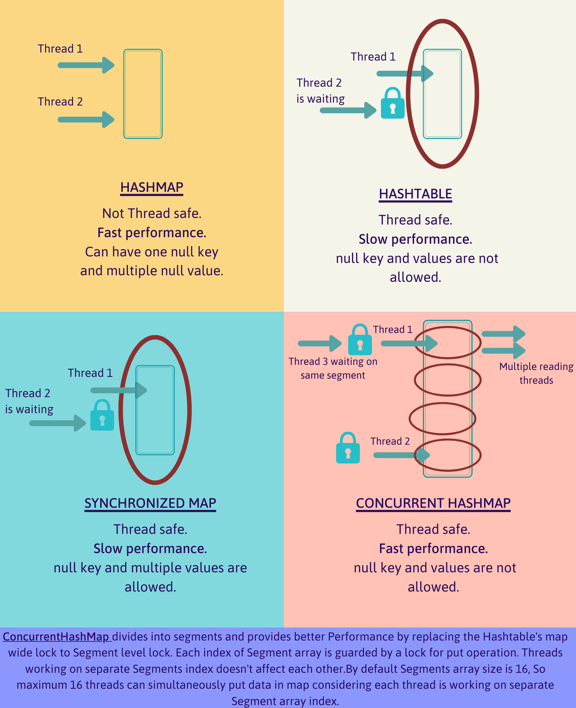
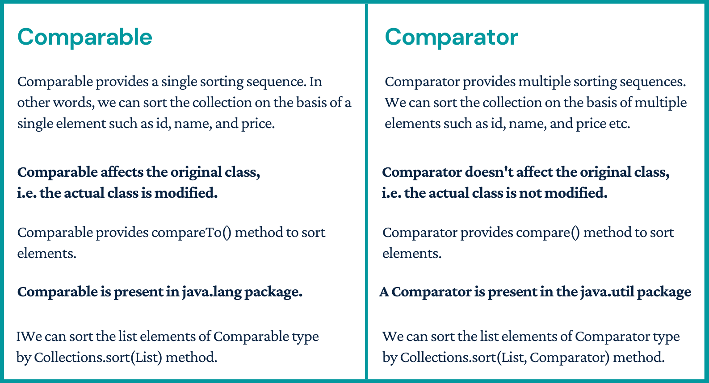
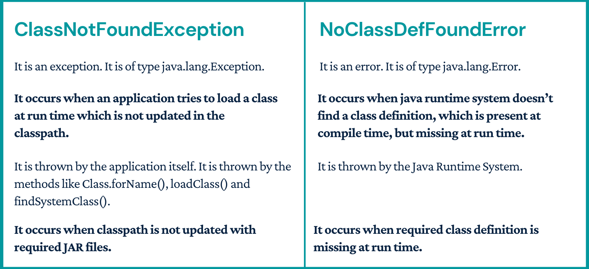

Why string class is immutable in Java
String pool is possible only because String is immutable in Java. This way Java Runtime saves a lot of heap space because different
String variables can refer to the same String variable in the pool. If String would not have been immutable, then String interning would not have been possible
because if any variable would have changed the value, it would have been reflected in the other variables too.
If String is not immutable then it would cause a severe security threat to the application. For example, database username, password are
passed as String to get database connection and in socket programming host and port details passed as String. Since String is immutable, its value can’t be
changed otherwise any hacker could change the referenced value to cause security issues in the application.
Since String is immutable, it is safe for multithreading. A single String instance can be shared across different threads.
This avoids the use of synchronization for thread safety. Strings are implicitly thread-safe.
Strings are used in java classloader and immutability provides security that correct class is getting loaded by Classloader.
For example, think of an instance where you are trying to load java.sql.Connection class but the referenced value is changed to myhacked.
Connection class that can do unwanted things to your database. Since String is immutable, its hashcode is cached at the time of creation and it doesn’t need to be
calculated again. This makes it a great candidate for the key in a Map and its processing is faster than other HashMap key objects.
This is why String is the most widely used as HashMap keys.
Array vs ArrayList
Array: int arr[] = new int[10]
ArrayList - Implemented with the concept of dynamic array.
ArrayList: ArrayList
An array is basic functionality provided by Java. ArrayList is part of collection framework in Java.
Therefore array members are accessed using [], while ArrayList has a set of methods to access elements and modify them.
Array is a fixed size data structure while ArrayList is not. One need not to mention the size of Arraylist while creating its object.
Even if we specify some initial capacity, we can add more elements.
Array can contain both primitive data types as well as objects of a class depending on the definition of the array.
However, ArrayList only supports object entries, not the primitive data types.
Note: When we do arraylist.add(1); it converts the primitive int data type into an Integer object.
Since ArrayList cant be created for primitive data types, members of ArrayList are always references to objects at different memory locations.
Therefore in ArrayList, the actual objects are never stored at contiguous locations. References of the actual objects are stored at contiguous locations.
In array, it depends whether the arrays is of primitive type or object type. In case of primitive types, actual values are contiguous locations,
but in case of objects, allocation is similar to ArrayList.
ArrayList vs LinkedList
LinkedList - Implemented with the concept of doubly linked list.
Insertions and Removal are easy and fast in LinkedList as compared to ArrayList because there is no
risk of re sizing array and copying content to new array if array gets full which makes
adding into ArrayList of O(n) in worst case, while adding is O(1) operation in LinkedList
in Java. ArrayList also needs to be update its index if you insert something anywhere except
at the end of array.
LinkedList has more memory overhead than ArrayList because in ArrayList each index only
holds actual object (data) but in case of LinkedList each node holds both data and address
of next and previous node.
Both LinkedList and ArrayList require O(n) time to find if an element is present or not. However we can do Binary Search on ArrayList if it is sorted and therefore can search in O(Log n) time.
Binary search on Custom Objects:
Collections.binarySearch(arrayList, 10);
Collections.binarySearch(arrayList, 50,Collections.reverseOrder());
For the best implementation of Binary search we need two prerequisites:
public static void main(String[] args)
{
// Create a list
List// Searching a domain with key value 20. To search
int index = Collections.binarySearch(l,
new Domain(20, null), c);
System.out.println("Found at index " + index);
}
1. The list must be in sorted order.
2. Any random element can be accessed in constant time.
Note: With linked list the second prerequisite is not satisfied as any random element in linked list cannot be accessed in constant time, but it must be traversed completely.
Hashmap internal working
HashMap in Java works on hashing principle. It is a data structure which allows us to store object and retrieve it in constant time O(1) provided we know the key. In hashing, hash functions are used to link key and value in HashMap. Objects are stored by calling put(key, value) method of HashMap and retrieved by calling get(key) method.
When we call put method, hashcode() method of the key object is called so that hash function of the map can find a bucket location to store value object, which is actually an index of the internal array, known as the table. HashMap internally stores mapping in the form of Map.Entry object which contains both key and value object.
When we want to retrieve the object, call the get() method and again pass the key object. This time again key object generate same hash code and we end up at same bucket location. If there is only one object then it is returned and that's our value object which you have stored earlier.
Since the internal array of HashMap is of fixed size, and if you keep storing objects, at some point of time hash function will return same bucket location for two different keys, this is called collision in HashMap. In this case, a linked list is formed at that bucket location and a new entry is stored as next node.
If we try to retrieve an object from this linked list, we need an extra check to search correct value, this is done by equals() method. Since each node contains an entry, HashMap keeps comparing entry's key object with the passed key using equals() and when it return true, Map returns the corresponding value.
Why HashMap not in collection framework
It is by design and Maps work with key/value pairs, while the other collections work with just values. Map maps keys to values. It allows its content to be viewed as a set of keys, a collection of values and a set of key-value mappings.
Note: "The collection framework" and “Collection interface” are not the same thing.
HashMap performance Improvement Changes in Java 8
JDK 8’s new strategy for dealing with Hash collisions. Earlier before Java 8, the performance of the HashMap was poor due to the hash collision, it degrades the performance of HashMap significantly. This change can be notifiable only when if we are using the HashMap for a large number of elements. The traversal of HashMap, get(), and other methods lookup time of HashMap have a negative impact due to hash collisions. This situation we can face when multiple keys end up in the same bucket, then values along with their keys are placed in a linked list. So, the retrieval time of elements from HashMap increases from O(1) to O(n). Because the linked list has to be traversed to get the entry in the worst case scenario. But Java 8 has come with the following new strategy for HashMap objects in case of high collisions. To address this issue, Java 8 hash elements use balanced trees instead of linked lists after a certain threshold is reached. Which means HashMap starts with storing Entry objects in a linked list but after the number of items in a hash becomes larger than a certain threshold. The hash will change from using a linked list to a balanced tree. Above changes ensure the performance of O(log(n)) in worst case scenarios and O(1) with proper hashCode(). The alternative String hash function added in Java 7 has been removed.
Sort Hashmap by value and key
// by value
public static HashMap sortByValue(HashMap hm) {
// Create a list from elements of HashMap
List > list = new LinkedList >(hm.entrySet());
// Sort the list
Collections.sort(list, new Comparator>() {
@Override
public int compare(Map.Entry o1, Map.Entry o2) {
return (o1.getValue()).compareTo(o2.getValue());
}
});
// put data from sorted list to hashmap
HashMap temp = new LinkedHashMap();
for (Map.Entry aa : list) {
temp.put(aa.getKey(), aa.getValue());
}
return hm;
}
// by key
TreeMap sorted = new TreeMap<>(map);
// OR
TreeMap sorted = new TreeMap<>();
// Copy all data from hashMap into TreeMap
sorted.putAll(map);
// Display the TreeMap which is naturally sorted
for (Map.Entry entry : sorted.entrySet())
System.out.println("Key = " + entry.getKey() +", Value = " + entry.getValue());
Check two Hashmaps are equal
map1.equals(map2); //check key and values as equals
map1.keySet().equals(map2.keySet()); //Check only key sets
new ArrayList<>(map1.values()).equals(new ArrayList<>(map2.values())); //Check only values
new HashSet<>(map1.values()).equals(new HashSet<>(map2.values())); //allowed duplicates here
Please note that in case of custom classes as key or value we need to override the equals and hashcode method.
Check two objects are same in Hashset. Override Equals and Hashcode methods.
Override Equals and Hashcode method of the custom class using the fields.
Object a = new Object ("pankaj","1");
Object b = new Object ("pankaj","1");
Now only one object will be stored in Hashset because hashcode and equals methods are overriden as shown below.
//hashCode
public int hashCode() {
final int prime = 31;
int result = 1;
result = prime * result + ((id == null) ? 0 : id.hashCode());
result = prime * result + ((name == null) ? 0 : name.hashCode());
return result;
}
//equals
public boolean equals(Object obj) {
if (this == obj)
return true;
if (obj == null)
return false;
if (getClass() != obj.getClass())
return false;
SetCustomClass other = (SetCustomClass) obj;
if (id == null) {
if (other.id != null)
return false;
} else if (!id.equals(other.id))
return false;
if (name == null) {
if (other.name != null)
return false;
} else if (!name.equals(other.name))
return false;
return true;
}
Fail-fast vs Fail-safe : ConcurrentModificationException
fail-fast Iterators fail as soon as they realized that structure of Collection has been changed since iteration has begun. Structural changes means adding, removing or updating any element from collection while one thread is Iterating over that collection. fail-fast behavior is implemented by keeping a modification count and if iteration thread realizes the change in modification count it throws ConcurrentModificationException.
fail-safe iterator doesn't throw any Exception if Collection is modified structurally while one thread is Iterating over it because they work on clone of Collection instead of original collection and that’s why they are called as fail-safe iterator. Iterator of CopyOnWriteArrayList is an example of fail-safe Iterator also iterator written by ConcurrentHashMap keySet is also fail-safe iterator and never throw ConcurrentModificationException in Java.
To Avoid ConcurrentModificationException in single-threaded environment
Use the iterator remove() function to remove the object from underlying collection object. But in this case, you can remove the same object and not any other object from the list.
To Avoid ConcurrentModificationException in multi-threaded environment
Convert the list to an array and then iterate on the array. This approach works well for small or medium size list but if the list is large then it will affect the performance a lot.
Lock the list while iterating by putting it in a synchronized block. This approach is not recommended because it will cease the benefits of multithreading.
Use ConcurrentHashMap and CopyOnWriteArrayList classes. This is the recommended approach to avoid concurrent modification exception.
HashMap vs LinkedHashMap vs TreeMap vs Hashtable
HashMap: HashMap offers 0(1) lookup and insertion. If you iterate through the keys, though, the ordering of the keys is essentially arbitrary. It is implemented by an array of linked lists.
public class HashMap extends AbstractMap implements Map, Cloneable, SerializableIt contains only unique elements.
It may have one null key and multiple null values.
It maintains no order.
LinkedHashMap: LinkedHashMap offers 0(1) lookup and insertion. Keys are ordered by their insertion order. It is implemented by doubly-linked buckets.
public class LinkedHashMap extends HashMap implements MapIt contains only unique elements.
It may have one null key and multiple null values.
It is same as HashMap instead maintains insertion order.
TreeMap: TreeMap offers O(log N) lookup and insertion. Keys are ordered, so if you need to iterate through the keys in sorted order, you can. This means that keys must implement the Comparable interface. TreeMap is implemented by a Red-Black Tree.
public class TreeMap extends AbstractMap implements NavigableMap, Cloneable, SerializableIt contains only unique elements.
It cannot have null key but can have multiple null values.
It is same as HashMap instead maintains ascending order(Sorted using the natural order of its key).
Hashtable: “Hashtable” is the generic name for hash-based maps.
public class Hashtable extends Dictionary implementsMap, Cloneable, SerializableIt contains only unique elements.
It may have not have any null key or value.
It is synchronized.
It is a legacy class.
HashMap vs HashTable vs SynchronisedMap vs ConcurrentHashMap

Comparable vs Comparator

Chained Comparator: Sort a List by multiple attributes
Suppose we have a class Employee having three variables JobTitle, age and salary and we need to sort using all three variables.
Use Chained Comparator- Create three sorting sequence class for Employee using Comparator interface.
And then pass to chained Comparator as shown below.
public class EmployeeChainedComparator implements Comparator {
private List> listComparators;
@SafeVarargs
public EmployeeChainedComparator(Comparator... comparators) {
this.listComparators = Arrays.asList(comparators);
}
@Override
public int compare(Employee emp1, Employee emp2) {
for (Comparator comparator : listComparators) {
int result = comparator.compare(emp1, emp2);
if (result != 0) {
return result;
}
}
return 0;
}
}
//Job title comparator:
public class EmployeeJobTitleComparator implements Comparator {
@Override
public int compare(Employee emp1, Employee emp2) {
return emp1.getJobTitle().compareTo(emp2.getJobTitle());
}
}
//Age comparator:
public class EmployeeAgeComparator implements Comparator {
@Override
public int compare(Employee emp1, Employee emp2) {
return emp1.getAge() - emp2.getAge();
}
}
//Salary comparator:
public class EmployeeSalaryComparator implements Comparator {
@Override
public int compare(Employee emp1, Employee emp2) {
return emp1.getSalary() - emp2.getSalary();
}
}
//Main: Pass all three comparator to Chained comparator to sort using all variables.
Collections.sort(listEmployees, new EmployeeChainedComparator(
new EmployeeJobTitleComparator(),
new EmployeeAgeComparator(),
new EmployeeSalaryComparator())
);
Final Reference to an Object
In final reference we cannot change the reference but we can change the object values. That is the main difference between final reference and immutable class.
Final means that you can't change the object's reference to point to another reference or another object, but you can still mutate its state (using setter methods)
Where immutable means that the object's actual value can't be changed, but you can change its reference to another one.
OutOfMemoryError vs StackOverflowError
OutOfMemoryError is related to Heap.
StackOverflowError is related to stack.
When you start JVM you define how much RAM it can use for processing. JVM divides this into certain memory locations for its processing purpose, two of those are Stack & Heap
If you have large objects (or) referenced objects in memory, then you will see OutofMemoryError. If you have strong references to objects, then GC can't clean the memory space allocated for that object. When JVM tries to allocate memory for new object and not enough space available it throws OutofMemoryError because it can't allocate the required amount of memory.
How to avoid: Make sure un-necessary objects are available for GC.
All your local variables and methods calls related data will be on the stack. For every method call, one stack frame will be created and local as well as method call related data will be placed inside the stack frame. Once method execution is completed, the stack frame will be removed. ONE WAY to reproduce this is, have an infinite loop for method call, you will see StackOverflowError, because stack frame will be populated with method data for every call but it won't be freed (removed).
How to avoid: Make sure method calls are ending (not in an infinite loop)
ClassNotFoundException Vs NoClassDefFoundError

Java.lang.ThreadLocal class in Java
The Java ThreadLocal class enables you to create variables that can only be read and written by the same thread. Thus, even if two threads are executing the same code, and the code has a reference to the same ThreadLocal variable, the two threads cannot see each other's ThreadLocal variables. Thus, the Java ThreadLocal class provides a simple way to make code thread safe that would not otherwise be so.
private ThreadLocal threadLocal = new ThreadLocal();
threadLocal.set("A thread local value");
String threadLocalValue = (String) threadLocal.get();
threadLocal.remove(); Why wait in object class (Object has monitors)
Multiple threads can access one Object. Only one thread can hold object monitor at a time for synchronized methods/blocks.
wait(), notify(), notifyAll() method being in Object class allows all the threads created on that object to communicate with other.
Locking ( using synchronized or Lock API) and Communication (wait() and notify()) are two different concepts.
If Thread class contains wait(), notify(), notifyAll() methods, then it will create below problems:
Thread communication problem
Synchronization on object won’t be possible. If each thread will have monitor, we won’t have any way of achieving synchronization
Inconsistency in state of object.
If wait() and notify() were on the Thread instead then each thread would have to know the status of every other thread. How would thread1 know that thread2 was waiting for access to a particular resource? If thread1 needed to call thread2.notify() it would have to somehow find out that thread2 was waiting. There would need to be some mechanism for threads to register the resources or actions that they need so others could signal them when stuff was ready or available.
yield vs Join vs sleep
yield() method pauses the currently executing thread temporarily for giving a chance to the remaining waiting threads of the same priority to execute. If there is no waiting thread or all the waiting threads have a lower priority then the same thread will continue its execution. The yielded thread when it will get the chance for execution is decided by the thread scheduler whose behavior is vendor dependent.
join() If any executing thread t1 calls join() on t2 i.e; t2.join() immediately t1 will enter into waiting state until t2 completes its execution.
sleep() Based on our requirement we can make a thread to be in sleeping state for a specified period of time (hope not much explanation required for our favorite method).
Singleton design pattern
We need to have static member of class, private constructor and static factory method.
Static member: It gets memory only once because of static, it contains the instance of the Singleton class.
Private constructor: It will prevent to instantiate the Singleton class from outside the class.
Static factory method: This provides the global point of access to the Singleton object and returns the instance to the caller.
class Singleton{
private static Singleton obj;
private Singleton(){}
public static Singleton getA(){
if (obj == null){
synchronized(Singleton.class){
if (obj == null){
//instance will be created at request time
obj = new Singleton();
}
}
}
return obj;
}
}Immutable class
There are many immutable classes like String, Boolean, Byte, Short, Integer, Long, Float, Double etc. In short, all the wrapper classes and String class is immutable. We can also create immutable class by creating final class that have final data members as the example given below:
public final class Employee{
final String pancardNumber;
public Employee(String pancardNumber){
this.pancardNumber=pancardNumber;
}
public String getPancardNumber(){
return pancardNumber;
}
}Declare the class as final so it can’t be extended. If class is not final, one can extend this class and change the behavior using super in the constructor.
Make all fields private so that direct access is not allowed.
Do not provide setter methods (methods that modify fields) for variables, so that it can not be set.
Make all mutable fields final so that their values can be assigned only once.
Initialize all the fields through a constructor doing the deep copy.
Perform cloning of objects in the getter methods to return a copy rather than returning the actual object reference.
If the instance fields include references to mutable objects, don’t allow those objects to be changed
Don’t provide methods that modify the mutable objects.
Don’t share references to the mutable objects. Never store references to external, mutable objects passed to the constructor. If necessary, create copies and store references to the copies. Similarly, create copies of our internal mutable objects when necessary to avoid returning the originals in our methods.
Deep and Shallow copy
Shallow copy of an object copies the ‘main’ object, but doesn’t copy the inner objects. The ‘inner objects’ are shared between the original object and its copy. For example, in our Person object, we would create a second Person, but both objects would share the same Name and Address objects.
The problem with the shallow copy is that the two objects are not independent. If you modify the Name object of one Person, the change will be reflected in the other Person object.
Say we have a Person object with a reference variable mother; then, we make a copy of mother, creating a second Person object, son. If later on in the code, the son tries to moveOut() by modifying his Address object, the mother moves with him! This occurs because our mother and son objects share the same Address object.
public class Person {
private Name name;
private Address address;
public Person(Person originalPerson) {
this.name = originalPerson.name;
this.address = originalPerson.address;
}
[…]
}
//main
Person mother = new Person(new Name(…), new Address(…));
[…]
Person son = new Person(mother);
[…]
son.moveOut(new Street(…), new City(…));A change in the Address object of one Person wouldn’t be reflected in the other object. If we take a look at the code in example , you can see that we’re not only using a copy constructor on our Person object, but we are also utilizing copy constructors on the inner objects as well.
Using this deep copy, we can retry the mother-son example. Now the son is able to successfully move out!.
However, that’s not the end of the story. To create a true deep copy, we need to keep copying all of the Person object’s nested elements, until there are only primitive types and “Immutables” left. Let’s look at the Street class to better illustrate this:
public class Person {
private Name name;
private Address address;
public Person(Person otherPerson) {
this.name = new Name(otherPerson.name);
this.address = new Address(otherPerson.address);
}
[…]
}
//keep copying all of the Person object’s nested elements,
//until there are only primitive types and “Immutables” left
public class Street {
private String name;
private int number;
public Street(Street otherStreet){
this.name = otherStreet.name;
this.number = otherStreet.number;
}
[…]
}Serializable and Externalizable
The Java's java.io.Serializable is a marker interface, means that it contains no methods or fields and serves only to identify the semantics of being serializable. Therefore, a class implementing Serializable does not have to implement any specific methods . It is just used to "mark" java classes that their state can be serialized or deserialized.
If you try to serialize an object of a class which implements serializable, but the object includes a reference to an non-serializable class then a NotSerializableException will be thrown at runtime.
The serialization runtime associates with each serializable class a version number, called a serialVersionUID, which is used during deserialization to verify that the sender and receiver of a serialized object have loaded classes for that object that are compatible with respect to serialization. If the receiver has loaded a class for the object that has a different serialVersionUID than that of the corresponding sender's class, then deserialization will result in an InvalidClassException. A serializable class can declare its own serialVersionUID explicitly by declaring a field named serialVersionUID that must be static, final, and of type long:
ANY-ACCESS-MODIFIER static final long serialVersionUID = 42L;
If a serializable class does not explicitly declare a serialVersionUID, then the serialization runtime will calculate a default serialVersionUID value for that class based on various aspects of the class, as described in the Java(TM) Object Serialization Specification.
Externalizable provides us writeExternal() and readExternal() method which gives us flexibility to control java serialization mechanism instead of relying on Java's default serialization. Correct implementation of Externalizable interface can improve performance of application drastically.
// Serialization
try{
//Saving of object in a file
FileOutputStream file = new FileOutputStream(filename);
ObjectOutputStream out = new ObjectOutputStream(file);
// Method for serialization of object
out.writeObject(object);
out.close();
file.close();
System.out.println("Object has been serialized");
}
// Deserialization
try{
// Reading the object from a file
FileInputStream file = new FileInputStream(filename);
ObjectInputStream in = new ObjectInputStream(file);
// Method for deserialization of object
object1 = (Demo)in.readObject();
in.close();
file.close();
System.out.println("Object has been deserialized ");
} Shuffle ArrayList
Collections.shuffle() is used to shuffle lists in java.
Collections.shuffle(mylist);
// Here we use Random() to shuffle given list.
Collections.shuffle(mylist, new Random());
// Here we use Random(3) to shuffle given list. Here 3
// is seed value for Random.
Collections.shuffle(mylist, new Random(3)); static void randomize( int arr[], int n)
{
Random r = new Random();
// Start from the last element and swap one by one.
for (int i = n-1; i > 0; i--){
// Pick a random index from 0 to i
int j = r.nextInt(i);
// Swap arr[i] with the element at random index
int temp = arr[i];
arr[i] = arr[j];
arr[j] = temp;
}
}
// main method
public static void main(String[] args)
{
int[] arr = {1, 2, 3, 4, 5, 6, 7, 8};
int n = arr.length;
randomize (arr, n);
}
Reverse a String
Reverse String using toCharArray().
public static void main(String[] args) {
String s = "sachin";
for (int i =s.length()-1; i>=0;i--) {
s=s + s.toCharArray()[i];
}
}
Using Recurrsion.
public static String reverse(String str) {
if ((str==null)||(str.length() <= 1)) {
return str;
}
else
{
return str.substring(str.length()-1) + reverse(str.substring(0,str.length()-1));
}
}
S.O.L.I.D Principles
S.O.L.I.D represents five principles of Java which are:
S: Single responsibility principle
O: Open-closed principle
L: Liskov substitution principle
I: Interface segregation principle
D: Dependency inversion principle
According to the single responsibility principle, there should be only one reason due to which a class has to be changed. It means that a class should have one task to do.
The principle can be well understood with an example. Imagine there is a class which performs following operations.
connected to a database.
read some data from database tables.
finally, write it to a file.
Have you imagined the scenario? Here the class has multiple reasons to change, and few of them are the modification of file output, new data base adoption. When we are talking about single principle responsibility, we would say, there are too many reasons for the class to change; hence, it doesn’t fit properly in the single responsibility principle.
According to open closed principle, entities or objects should remain open for extension, but they should stay closed for modification. To be precise, according to this principle, a class should be written in such a manner that it performs its job flawlessly without the assumption that people in the future will simply come and change it. Hence, the class should remain closed for modification, but it should have the option to get extended. Ways of extending the class include:
Inheriting from the class.
Overwriting the required behaviors from the class.
Extending certain behaviors of the class.
Liskov substitution principle the only thing is that every subclass or derived class should be substitutable for their parent or base class.
You can say that it is a unique object-oriented principle. The principle can further be simplified by understanding this principle; a child type of a particular parent type without making any complication or blowing things up should have the ability to stand in for that parent. This principle is closely related to Liskov Substitution principle.
According to interface segregation principle, a client, no matter what should never be forced to implement an interface that it does not use or the client should never be obliged to depend on any method, which is not used by them.
So basically, the interface segregation principles as you prefer the interfaces, which are small but client specific instead of monolithic and bigger interface.
According to dependency inversion principle, entities should depend only on abstractions but not on concretions. According to it, the high-level module must never rely on any low-level module but should depend on abstractions.